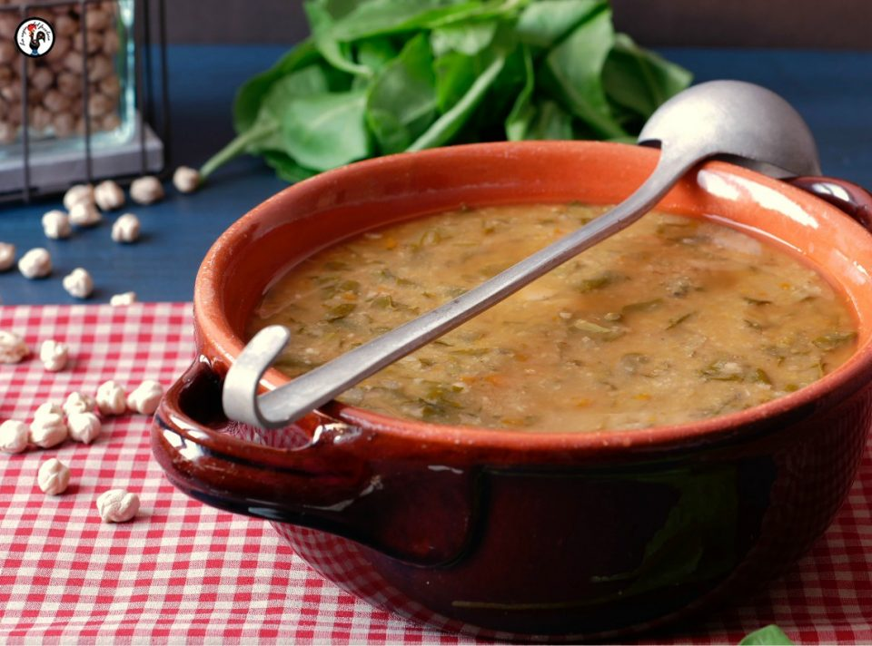

Chickpeas in Zimino Genoese ("Zimino di Ceci Genovese")
Description
Chickpeas in Zimino Genovese, to the Genoese, is known with the name of "Zemin de Ceixei". It consist of one exquisite preparation which still preserves its ancient Ligurian gastronomic tradition. It is made by combining the poor and easily available products of the earth, such as chard, mushrooms and of course the chickpeas that are its protagonists. Let's find out together, in the next steps, how to prepare this healthy dish and very tasty.
Ingredients:
- 250g of chickpeas
- Half a teaspoon of baking soda
- 5-6 leaves of Chard
- Carrot
- Celery
- Onion
- 1 garlic clove, crushed
- Dried mushrooms
- Parsley
- Extra virgin olive oil
- White wine
- Tomato concentrate
- Toasted bread
- Salt
- Grated Parmesan cheese
Method:
- First, soak the chickpeas at least 12 hours before starting to prepare the dish. You must place them in a container containing plenty of water and the baking soda.
- After the required time, drain and cook the chickpeas in salted water, in slow heat for a couple of hours.
- Soften the mushrooms in warm water, then squeeze them well and chop them. Finely chop the chard, the carrot, the celery, onion and garlic.
- Add extra virgin olive oil to a pan and sauté the garlic and the onion, and then add the celery, the carrot, the mushroom and the chard. Reduce it in half a glass of white wine to make the sauce.
- Add the tomate concentrate diluted in water and cook it for about 15 minutes, and then add the drained and rinsed chickpeas with 1,5l of water.
- Assemble the plate enriching with some pepper,a little extra virgin olive oil and grated Parmesan cheese. Add the toasted bread and then serve!